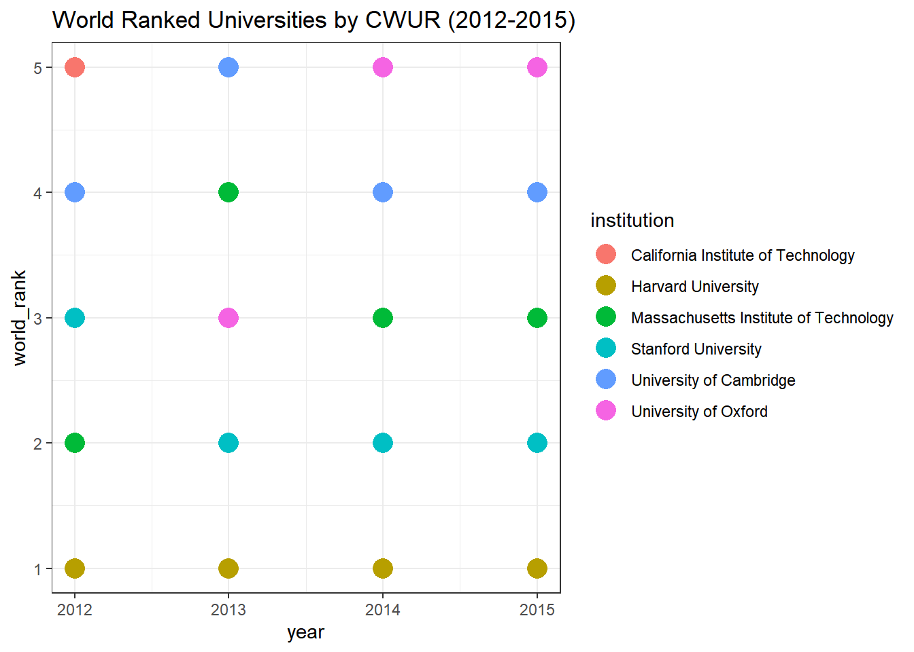
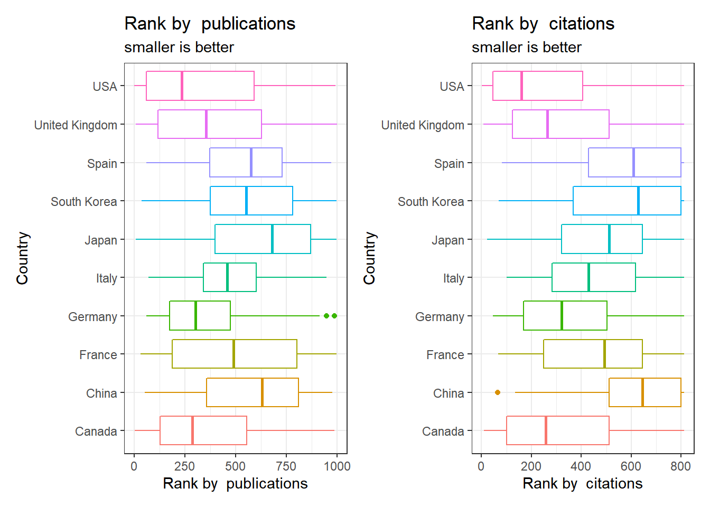
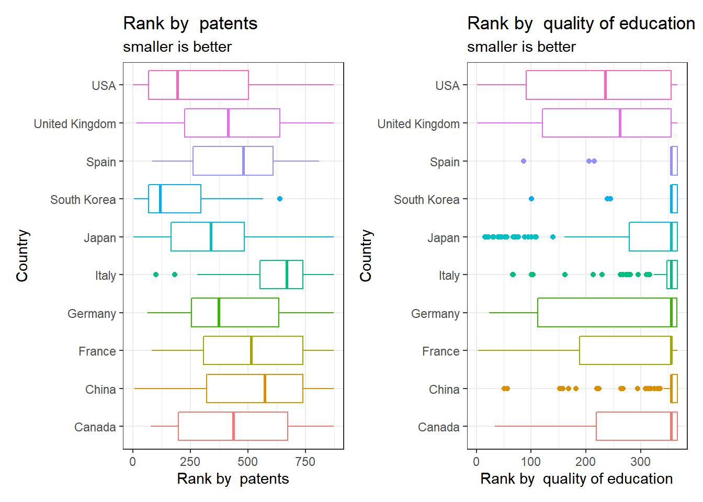
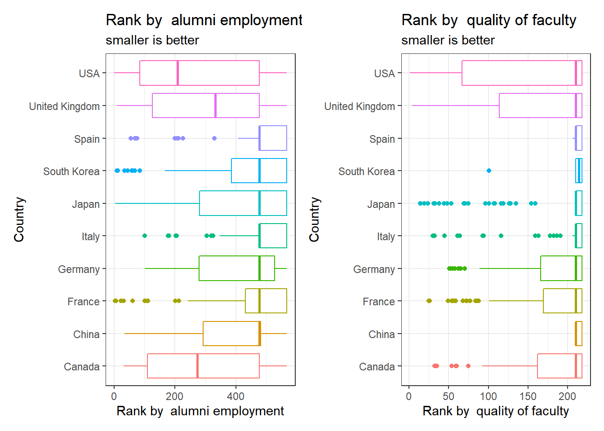

第 8 章 世界大学排名评估
8.1 数据
8.1.1 录入
cwurdata <- read_csv("data/University/cwurData.csv", show_col_types = FALSE)
educationExpenditure <- read_csv(
"data/University/education_expenditure_supplementary_data.csv",
show_col_types = FALSE)
educationalAttainment <- read_csv(
"data/University/educational_attainment_supplementary_data.csv",
show_col_types = FALSE)
schoolCountry <- read_csv(
"data/University/school_and_country_table.csv", show_col_types = FALSE)
shanghaiData <- read_csv(
"data/University/shanghaiData.csv", show_col_types = FALSE)
timesData <- read_csv(
"data/University/timesData.csv", show_col_types = FALSE)8.1.2 数据概览
现在我们有6个数据文件：
cwurData.csv (2200 rows, 14 columns)
education_expenditure_supplementary_data.csv (333 rows, 9 columns)
educational_attainment_supplementary_data.csv (79055 rows, 29 columns)
school_and_country_table.csv (818 rows, 2 columns)
shanghaiData.csv (4897 rows, 11 columns)
timesData.csv (2603 rows, 14 columns)
我们看一下数据的前几行及其基本概览：
kable(head(cwurdata, 10), "html") %>%
kable_styling(bootstrap_options = "striped", full_width = F,
position = "left")| world_rank | institution | country | national_rank | quality_of_education | alumni_employment | quality_of_faculty | publications | influence | citations | broad_impact | patents | score | year |
|---|---|---|---|---|---|---|---|---|---|---|---|---|---|
| 1 | Harvard University | USA | 1 | 7 | 9 | 1 | 1 | 1 | 1 | NA | 5 | 100.00 | 2012 |
| 2 | Massachusetts Institute of Technology | USA | 2 | 9 | 17 | 3 | 12 | 4 | 4 | NA | 1 | 91.67 | 2012 |
| 3 | Stanford University | USA | 3 | 17 | 11 | 5 | 4 | 2 | 2 | NA | 15 | 89.50 | 2012 |
| 4 | University of Cambridge | United Kingdom | 1 | 10 | 24 | 4 | 16 | 16 | 11 | NA | 50 | 86.17 | 2012 |
| 5 | California Institute of Technology | USA | 4 | 2 | 29 | 7 | 37 | 22 | 22 | NA | 18 | 85.21 | 2012 |
| 6 | Princeton University | USA | 5 | 8 | 14 | 2 | 53 | 33 | 26 | NA | 101 | 82.50 | 2012 |
| 7 | University of Oxford | United Kingdom | 2 | 13 | 28 | 9 | 15 | 13 | 19 | NA | 26 | 82.34 | 2012 |
| 8 | Yale University | USA | 6 | 14 | 31 | 12 | 14 | 6 | 15 | NA | 66 | 79.14 | 2012 |
| 9 | Columbia University | USA | 7 | 23 | 21 | 10 | 13 | 12 | 14 | NA | 5 | 78.86 | 2012 |
| 10 | University of California, Berkeley | USA | 8 | 16 | 52 | 6 | 6 | 5 | 3 | NA | 16 | 78.55 | 2012 |
glimpse(cwurdata)## Rows: 2,200
## Columns: 14
## $ world_rank <dbl> 1, 2, 3, 4, 5, 6, 7, 8, 9, 10, 11, 12,~
## $ institution <chr> "Harvard University", "Massachusetts I~
## $ country <chr> "USA", "USA", "USA", "United Kingdom",~
## $ national_rank <dbl> 1, 2, 3, 1, 4, 5, 2, 6, 7, 8, 9, 10, 1~
## $ quality_of_education <dbl> 7, 9, 17, 10, 2, 8, 13, 14, 23, 16, 15~
## $ alumni_employment <dbl> 9, 17, 11, 24, 29, 14, 28, 31, 21, 52,~
## $ quality_of_faculty <dbl> 1, 3, 5, 4, 7, 2, 9, 12, 10, 6, 8, 14,~
## $ publications <dbl> 1, 12, 4, 16, 37, 53, 15, 14, 13, 6, 3~
## $ influence <dbl> 1, 4, 2, 16, 22, 33, 13, 6, 12, 5, 20,~
## $ citations <dbl> 1, 4, 2, 11, 22, 26, 19, 15, 14, 3, 28~
## $ broad_impact <dbl> NA, NA, NA, NA, NA, NA, NA, NA, NA, NA~
## $ patents <dbl> 5, 1, 15, 50, 18, 101, 26, 66, 5, 16, ~
## $ score <dbl> 100.00, 91.67, 89.50, 86.17, 85.21, 82~
## $ year <dbl> 2012, 2012, 2012, 2012, 2012, 2012, 20~8.2 世界大学排名中心-Center for World University Rankings (CWUR)
该中心提供了世界最顶级大学的排名信息。中心根据National Rank, Quality of Education（教学质量）, Alumni Employment（毕业生就业情况）, Quality of Faculty（教师素质）, Publications（出版物）, Influence（影响力）, Citations（引用量）, Broad Impact（海外影响力）, Patents（专利）等指标计算每所大学的, Total Score（综合评分），并确定最终排名。e.g.，Harvard University以100分的Total Score和多项指标第一，名列2012年世界大学排名第一。
8.2.1 最好的大学
那么2012~2015年排名前5的大学情况如何？
cwurTop5 <- cwurdata %>%
group_by(year) %>%
select(year, institution, world_rank) %>%
top_n(-5, wt = world_rank)
cwurTop5## # A tibble: 20 x 3
## # Groups: year [4]
## year institution world_rank
## <dbl> <chr> <dbl>
## 1 2012 Harvard University 1
## 2 2012 Massachusetts Institute of Technology 2
## 3 2012 Stanford University 3
## 4 2012 University of Cambridge 4
## 5 2012 California Institute of Technology 5
## 6 2013 Harvard University 1
## 7 2013 Stanford University 2
## 8 2013 University of Oxford 3
## 9 2013 Massachusetts Institute of Technology 4
## 10 2013 University of Cambridge 5
## 11 2014 Harvard University 1
## 12 2014 Stanford University 2
## 13 2014 Massachusetts Institute of Technology 3
## 14 2014 University of Cambridge 4
## 15 2014 University of Oxford 5
## 16 2015 Harvard University 1
## 17 2015 Stanford University 2
## 18 2015 Massachusetts Institute of Technology 3
## 19 2015 University of Cambridge 4
## 20 2015 University of Oxford 5ggplot(cwurTop5, aes(x = year, y = world_rank, color = institution)) +
geom_point(size = 5) +
theme_bw() +
labs(title = "World Ranked Universities by CWUR (2012-2015)")
2012~2015年间世界排名前5的大学有：哈弗、MIT、斯坦福、加州理工、剑桥、牛津
2012~2015年间，哈弗大学始终排名第一。
MIT和斯坦福紧随其后。
接下来，我们看看每年排名前十的高校的情况，其中前三名分别使用金、银、铜表示，4~10采用绿色。几年的图形做法类似，为避免重复操作，我们应创建一个函数。
# 每年排名前十高校图形绘制函数
cwurPlotYear <- function(nYear){
cwurdata %>%
filter(year == nYear) %>%
top_n(10, -world_rank) %>%
ggplot(aes(x = reorder(institution, -world_rank), y = world_rank)) +
geom_bar(stat = "identity",
aes(fill = reorder(institution, -world_rank)),
color = "black") +
theme_bw() +
coord_flip() +
scale_fill_manual(values = c(rep("lightgreen", 7),
"#CD7F32", "grey", "gold"))+
guides(fill = "none") +
labs(x="Institution", y="World Rank",
title=paste(nYear),
subtitle="smaller better")
}
p1 <- cwurPlotYear(2012)
p2 <- cwurPlotYear(2013)
p3 <- cwurPlotYear(2014)
p4 <- cwurPlotYear(2015)
(p1|p2)/(p3|p4)图 8.1: 2012~2015年排名前十高校
8.2.2 国家排名
cwurCountry <- cwurdata %>%
group_by(country) %>%
summarise(n = length(publications)) %>%
top_n(10, n) %>%
ungroup()
cwurCountry <- cwurdata %>%
filter(country %in% cwurCountry$country)
cwurCountryPlot <- function(rankBy, By){
ggplot(cwurCountry, aes(x = country, y = {{rankBy}}, col = country)) +
guides(col = "none") +
geom_boxplot() +
theme_bw() +
coord_flip() +
labs(x = "Country", y = paste("Rank by ", By),
title = paste("Rank by ", By),
subtitle = "smaller is better")
}
p1 <- cwurCountryPlot(publications, "publications")
p2 <- cwurCountryPlot(citations, "citations")
p3 <- cwurCountryPlot(patents, "patents")
p4 <- cwurCountryPlot(quality_of_education, "quality of education")
p5 <- cwurCountryPlot(alumni_employment, "alumni employment")
p6 <- cwurCountryPlot(quality_of_faculty, "quality of faculty")